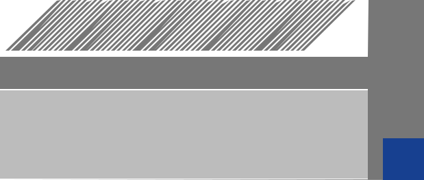

▤Disquette A▧Disque dur▣Corbeille
MY ATARI STBienvenue sur votre 1040 STE
Choisissez un jeu dans votre collection
Choisissez un jeu dans votre collection
◢
◢ ATARI SC1224 COLOUR MONITOR●

ATARI 1040 STE · CLAVIER ORIGINAL · ÉCRAN 340 × 200
COLLECTION DE DISQUETTES
Vos jeux rangés comme dans votre collection d'origine